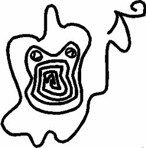

Ve bu HUMWAWA’nın imzasıdır.

Ve HUMWAWA rahibe görünecek de, korkunç PAZUZU aynı anda orada olmaz mı? Bütün hastalıkların ve vebaların Tanrısı, sırıtan Karanlık Meleklerin Dört Kanatlısı, boynuzlu, keskinleşmiş dişleri yüzünden tıpkı Ayın yüksekliklerinde olduğu gibi Güneşin yüksekliklerinde de kutsal olan APHKHALLU’nun şehirlerinin toprakları üzerinden, içinden uluma sesleri çıkardığı çürümüş cinsel organları ile fırıl fırıl dönen kumlar ve rüzgarla olduğu gibi bomboş bir dinginlikle geçerken ve gerçekte PAZUZU’yu bir insanı tutsak ettiğinde, onu ortadan kaldıracak kişi yetenekli majisyendir, çünkü PAZUZU öldürene kadar tutar ve bırakmaz.
Bil ki, HUMWAWA ve PAZUZU’nun kardeştir. HUMWAWA, sessiz, fısıldayan rüzgara biner ve hayvan sürüleri kendisininmiş gibi davranır, o işaretle ki sen PAZUZU’nun geleceğini anlarsın.